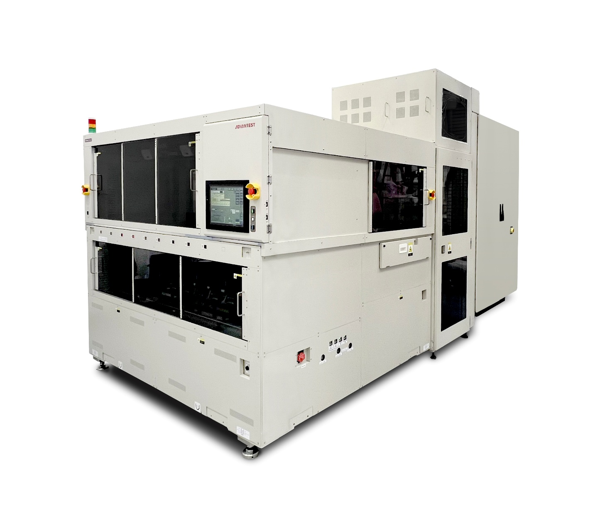

7038 Single Test Rack (STR) System-Level Test Platform {#7038-str}
In September, Advantest announced its 7038 Single Test Rack (STR) system-level test (SLT) and burn-in test (BI) solution. The 7038 STR extends the company's proven 7038 SLT platform with a lower-cost architecture optimized for slot-based automated test solutions, enabling right-sized SLT deployment in the production of artificial intelligence (AI), high-performance compute (HPC), automotive, and other low- to mid-volume devices.
The new 7038 STR delivers liquid-cooled thermal management of up to 1.4 kW per test site, enabling robust testing of today's most complex and power-hungry devices. Thermal capabilities beyond 1.4 kW are available in Advantest's suite of offerings. Like the 7038 dual-rack test solution, the 7038 STR will also offer air-cooled thermal management for even more cost-effective test. With asynchronous test capability for up to 48 sites, the system offers a single-vendor turnkey solution that includes socket interface boards (SIBs), sockets, device multi-zone thermal management, software management and control, and an integrated automated handler. This single-source approach eliminates the need to obtain multiple components from different suppliers, streamlining deployment and reducing risk for customers.
As device complexity and power requirements continue to rise in the HPC, AI, and automotive markets, the need for advanced SLT and BI solutions has grown significantly. In particular, automotive makers investing heavily in advanced driver assistance systems (ADAS) and telematics processing need a mid-power solution that goes beyond air-cooled thermal solutions for SLT. The 7038 STR provides a solution that can scale with the power and size increase of these processors. Air-cooled systems are limited to approximately 100 W per device, while the 7038 STR's liquid-cooled design supports the higher power levels demanded by next-generation processors.
The 7038 STR is especially suited for mid- to low-volume production environments where customers require advanced SLT/BI capabilities without the higher investment and larger footprint of dual-rack systems. Its compatibility with the broader 7038 product family means that customers can easily migrate test programs and hardware between the single- and dual-rack configurations as their production volumes grow. In addition, the system is fully compatible with ATS ActivATE360, Advantest's intuitive test management software. ActivATE provides turnkey real-time monitoring, logging, and control across device temperature, current, and power, simplifying program development and ensuring smooth integration into customer test environments.
The 7038 Single Test Rack solution is available immediately, with pricing dependent on slot configuration, sites per slot, and thermal requirements.

MTe - Unified, Scalable Test Platform for Power Semiconductors {#mte}
In October, Advantest announced the MTe power test platform. The cutting-edge MTe redefines test efficiency and scalability to address test requirements for the fast-growing power semiconductor market.
Increasing market demand for electrification across automotive, industrial, renewable energy, telecommunication and data infrastructure applications is pushing semiconductor manufacturers to achieve higher performance and lower cost of test (CoT). The MTe platform responds to these needs by combining modular hardware architecture, ultimate system scalability and advanced digital control, redefining the standard in power semiconductor test performance and efficiency.
Designed with state-of-the-art Advantest technology, MTe provides significant footprint reduction and optimized resource distribution without performance degradation---a key enabler to attract major IDM and OSAT players. The MTe platform is able to address emerging wide-bandgap semiconductor (e.g., SiC and GaN) challenges, as well as the integration of digital IP cores on power devices (e.g., IPM and IPD), providing high bandwidth capture, best-in-class gate driver control, dynamic (and short-circuit) test up to 10kA, and flexible high-voltage digital capabilities.
Aligned with Advantest's history of providing scalable test platforms, MTe distributed computing architecture provides significant multisite test efficiency, enabling a high-parallel-test solution with optimized throughput. The MTe platform is now available worldwide. Early evaluations by customers in automotive and industrial power applications have confirmed significant productivity and throughput gains compared with legacy testers.

M5241 Memory Handler {#m5241}
In December, leading semiconductor test equipment supplier Advantest Corporation announced the M5241 Memory Handler, its next-generation handler developed to meet the performance, automation, and cost-efficiency demands of emerging high-performance memory devices---particularly those used in artificial intelligence (AI) applications. First shipments of the new handler are scheduled for Q2 of calendar year 2026.
Engineered as the next evolution of Advantest's memory test cell strategy, the M5241 utilizes vertical docking to integrate seamlessly with the company's latest T5801 ultra-high-speed DRAM tester and offers docking compatibility with existing testers, including the T5833, T5503HS2, and T5835, enabling customers to fully leverage their installed base. The handler's new temperature-control architecture---combined with optional active thermal control---delivers accurate, stable testing for advanced memory ICs, including those with significant self-heating, directly improving yield and reliability for customers' devices.
The M5241 was developed in response to rapid growth in demand for high-bandwidth and high-capacity memory used in AI and data-center applications. The new handler strengthens Advantest's market-leading position while supporting customers' need for higher throughput, lower costs, and improved operational visibility.
The new handler has already undergone internal evaluation with actual memory ICs in combination with the T5801 tester, completing validation under mass-production conditions. Multiple major memory manufacturers are preparing for adoption.

T2000 AiR2X Air-Cooled Test Solution {#t2000-air2x}
In December, leading semiconductor test equipment supplier Advantest Corporation announced the T2000 AiR2X, a next-generation air-cooled test system engineered to meet rising demand for compact, cost-efficient testers in evaluation and high-mix, low-volume production environments. The new solution is fully compatible with the conventional T2000 test system and delivers twice the test resources of the previous air-cooled T2000 AiR test system, while maintaining low power and air-cooling requirements.
The T2000 AiR2X addresses multiple converging market factors, including end-of-life support for legacy systems such as the T6500 series and T7700 series, and ongoing replacement needs across compact air-cooled testers. With a multitude of air-cooled SoC test systems in operation worldwide, the new T2000 AiR2X solution positions Advantest to meet sustained demand in this growing market.
With its flexible measurement configuration, the T2000 AiR2X supports up to 12 measurement modules, including functional/SCAN test, high-precision DC and automotive device DC testing up to 320V. The system's unique multisite controller function significantly reduces test time during volume production.
The T2000 AiR2X incorporates Advantest's T2000 RECT550 performance board, which flexibly supports a wide range of configurations, along with a unified support infrastructure and expandable module options, adopting the same program environment used in the T2000. In addition, the Rapid Development Kit (RDK) significantly reduces the effort required for program creation and debugging, contributing to shorter platform migration and implementation times.
Initial device evaluations are underway, confirming broad application coverage for the T2000 AiR2X across industrial MCUs, consumer ASICs, battery-monitoring ICs for automotive and mobile devices, and power analog applications. The system will enter general availability later this month.